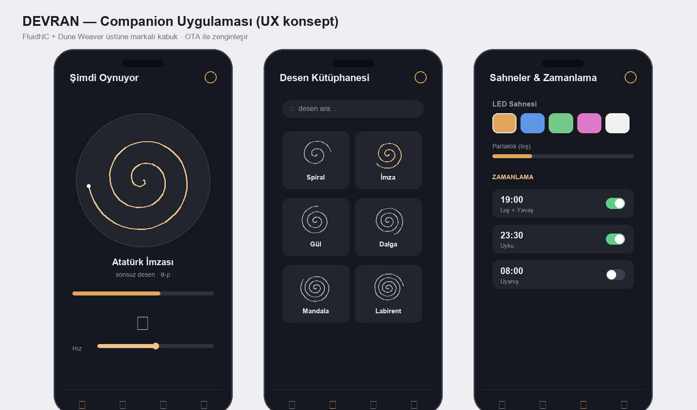

Pazara Çıkış (GTM) + Companion Uygulama UX
Premium tasarım objesini nasıl konumlandırıp satarız + "akıllı obje" deneyimini tanımlayan uygulama konsepti. Global donanım/tasarım şirketi yaklaşımı.

1) Konumlandırma
DEVRAN = yaşayan sanat eseri — dekoratif obje + sakinleştirici hareket + ışık. Hedef his: Teenage Engineering'in tasarım disiplini + Sisyphus'un sükûneti, yerli üretim hikâyesiyle.
- Birincil kitle: tasarım-bilinçli premium ev sahibi, koleksiyoner, hediye alıcısı.
- İkincil: otel/lobi/ofis (kurumsal), galeri/konsept mağaza.
- Mesaj: "Kumun üstünde kendiliğinden çizilen, hiç tekrarlamayan sanat."
2) Kanal stratejisi
| Kanal | Rol |
|---|---|
| Kickstarter / crowdfunding | donanımda standart lansman — talep doğrula + ön finansman + topluluk |
| D2C web (ön-sipariş + checkout) | ana marj kanalı; mevcut site → e-ticaret'e |
| Tasarım perakende / galeri / konsept mağaza | premium konumlandırma + görünürlük |
| Kurumsal/hediye | yüksek sepet, B2B |
3) Fiyat katmanları
| Katman | İçerik | Fiyat (hedef) |
|---|---|---|
| Early bird (Kickstarter) | ilk parti, indirimli | ~17.900 ₺ / ~$530 |
| Standart | ceviz + temperli cam | 21.900 ₺ / ~$650 |
| Signature/limited | özel finiş + plaka + ekstra desen | ~28.900 ₺ / ~$850 |
| (Aksesuar) | ekstra desen paketi, özel kum | düşük marj-yükseltici |
Seri COGS ~7.800 ₺ → standart katmanda ~%64 brüt marj. İade rezervi (~%3) + garanti (~%8) fiyata içkin.
4) Lansman zaman çizelgesi (kaba)
- Prototip + gerçek foto/film (ön koşul — render değil)
- Kitle ön-ısıtma (landing + e-posta listesi + sosyal teaser)
- Kickstarter (30 gün) — hedef X adet
- Üretim (PVT→seri) + CE/FCC paralel
- Teslim + D2C açılışı + perakende/galeri görüşmeleri
- Topluluk deseni + sürüm güncellemeleri
5) Ölçütler (global pro takip eder)
Dönüşüm oranı, CAC, AOV, iade %, NPS, üretim verimi (yield), birim marj, Kickstarter dönüşümü.
6) Companion uygulama UX (konsept)
"Akıllı obje" deneyimi — Sisyphus/Dune Weaver seviyesinde, marka diliyle:
| Ekran | İşlev |
|---|---|
| Şimdi oynuyor | canlı desen önizleme + ilerleme, hız, LED sahnesi, oynat/duraklat |
| Desen kütüphanesi | yerleşik + topluluk .thr; favori, kategori |
| Sahneler | LED modu (idle/playing/scheduled), renk, parlaklık |
| Zamanlama | "akşam 19:00 loş + yavaş", uyku/uyanma |
| Cihaz | Wi-Fi, OTA güncelleme, kalibrasyon, durum/sağlık |
| Stüdyo | görüntü/yazı → desen (image→.thr), paylaş |
İlkeler: sessiz/sakin arayüz, premium tipografi, tek elle erişim, OTA ile zamanla zenginleşen özellikler (yazılım değeri). Teknik altyapı FluidNC + Dune Weaver üstüne markalı bir kabuk.
Ekosistem = donanım marjı + yazılım/desen pazarı (tekrar gelir + topluluk = savunma hattı, çünkü donanım kolay kopyalanır).